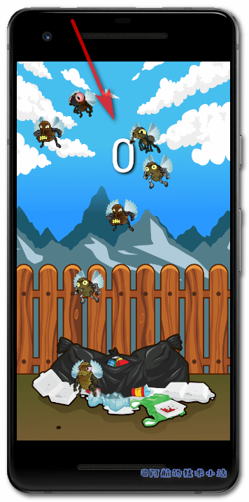
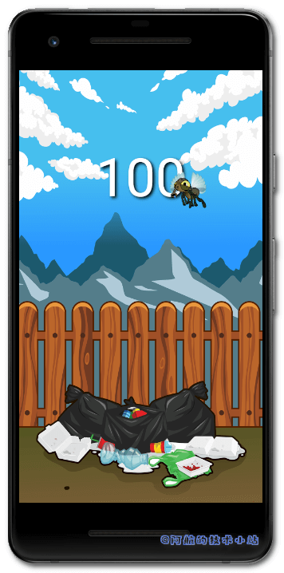
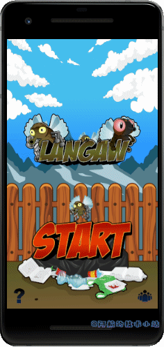
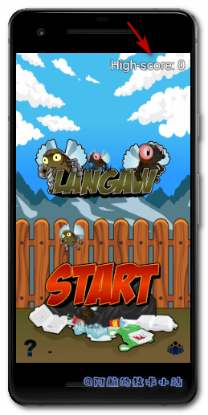

引言
分数和高分记录是任何游戏中不可或缺的一部分. 有些游戏根据收集的金币数量计算得分, 有些基于杀敌数, 有些则基于存活时间.
同样不能忽视音效和BGM(背景音乐). 加上它们, 游戏将会蜕变🦋.
如果一个游戏无声, 它就是不完整的.
欢迎来到Flutter+Flame系列的第四章. 如果你还没有读过之前的章节, 建议你先阅读一下哦!🤭
🔴 注意: 本教程的背景音乐有些过时. 你可以先学本章教程, 之后再替换为这篇教程
下面是我们本系列教程的文章目录:
- Flutter 游戏开发(flame) Flame介绍
- Flutter 游戏开发(flame) 01 开发2D休闲游戏：消灭小飞蝇(1/5)
- Flutter 游戏开发(flame) 02 图形和动画(2/5)
- Flutter 游戏开发(flame) 03 界面和弹窗(3/5)
- Flutter 游戏开发(flame) 04 分数, 存档和音效(4/5) 本章
- Flutter 游戏开发(flame) 05 收尾和打包(5/5)
需具备的条件
- 本系列教程之前的全部要求👈
- 更多的资源包 – 本教程提供了资源包, 但你也可以使用自己的. 推荐资源网站Open Game Art .
- 音效和音乐资源 - 这些也可以在游戏资源网站上找到, 比如Open Game Art . 还有专门的音频资源比如BenSound.com . 同样, 你必须查看许可并在游戏中表示感谢.
我们将使用与前一部分相同的编码规范👩🏫
新的资源包
这一部分中, 我们需要另一个资源包, 包含额外的图形、背景音乐和一些音效.
[epcl_box type=“error”]注意: 如果你遵循本教程, 则可以使用上述资源包. 本资源包是Github上Langaw(原作者)
项目的一部分, 该项目获得CC-BY-NC-ND许可证的许可.[/epcl_box]
这意味着您可以共享、复制或者重新分发资源.
- 你必须在感谢中提到, 提供许可证的链接, 并标明你是否进行了更改.
- 你不得将资源用于商业目的.
- 如果混合, 转换或者构建资源, 则不能分发修改后的资源.
- 你不得应用法律条款或技术措施, 在法律上限制他人做许可证允许的任何事情.
[epcl_box type=“notice”]阿航在这里提醒: 目前国内的版权保护做的不够好. 希望大家能够保护资源原作者辛苦的创作🙏🙏! 不能使用未经许可且无版权的资源, 向盗版说不👋![/epcl_box]
继续开发
在这部分中, 我们将专注于分数和音效.
我们将使用另一个Flutter库来记录, 保存玩家的最高分.
至于音效, 我们将使用Flame中的音频库.
第一步: 评分
目前为止, 游戏的目标只是不停的击杀小飞蝇, 直到玩家打偏. 除此之外, 没有目标.
我们来添加一个目标. 在玩家击中小飞蝇时得一分, 并累计到当前分数中. 与其他的游戏一样, 分数将从零开始, 并在新游戏时重置.
新建用于记录分数的实例变量
首先来到./lib/langaw-game.dart, 添加实例变量:
int score;
小提示: 只需要添加到其他实例变量的下方.
在initialize()中, 初始化score的值:
score = 0;
我们需要玩家每次点击开始游戏按钮时, 重置此值.
跳转至./lib/components/start-button.dart, 在onTapDown处理器中添加:
game.score = 0;
显示分数
到目前为止还是蛮顺利的😏! 接下来我们把分数显示出来.
我们可以选择在game类中进行渲染. 但是由于展示的东西比较少, 我们将该逻辑封装在自己的component.
创建一个组件./lib/components/score-display.dart:
import 'dart:ui';
import 'package:flutter/painting.dart';
import 'package:langaw/langaw-game.dart';
class ScoreDisplay {
final LangawGame game;
ScoreDisplay(this.game) {}
void render(Canvas c) {}
void update(double t) {}
}
💡 代码解析: 从
import开始,dart:ui使我们可以访问Canvas和Offset;package:flutter/painting使我们可以访问TextPainter;package:langaw/langaw-game.dart使我们可以访问game类.🟡 提示: 我们已经有了一个名为
game的实例变量, 在创建此类的实例时必须传入此变量. 与我们在签名的component中定义的其他component、controller和view一致.
让我们再添加三个实例变量: TextPainter类型的painter, 用于渲染分数值; textStyle控制分数样式; position决定分数的Offset(偏移量):
TextPainter painter;
TextStyle textStyle;
Offset position;
然后我们来处理构造函数, 在其中初始化实例变量值:
ScoreDisplay(this.game) {
painter = TextPainter(
textAlign: TextAlign.center,
textDirection: TextDirection.ltr,
);
textStyle = TextStyle(
color: Color(0xffffffff),
fontSize: 90,
shadows: [
Shadow(
blurRadius: 7,
color: Color(0xff000000),
offset: Offset(3, 3),
),
],
);
position = Offset.zero;
}
💡 代码解析: 首先, 使用创建一个新的
TextPainter用于初始化painter. 将其textAlign属性设置为居中, 因为我们将在屏幕上水平居中显示得分. 由于游戏是英文的(书写方向为从左至右), 我们将textDirection属性设置为LTR(Left-to-Right).接下来, 使用
TextStyle初始化textStyle属性. 设置三个属性:color设置为Color(0xffffffff)(纯白色); 字体大小为90 逻辑像素; 并且将shadows属性设置为包含一项的类型为Shadow的List. 此项定义一个阴影, 该阴影在右侧和底部偏移3个逻辑像素. 如果分数在另一个白色对象的顶部渲染(比如白云), 通过阴影可以增加对比度, 更容易看清.想了解有关逻辑像素的更多信息, 请查看Flutter官方文档(英文)
update函数实际上发生在渲染之前(无论是初始化还是在game loop中), 所以让我们首先来写它:
void update(double t) {
if ((painter.text?.text ?? '') != game.score.toString()) {
painter.text = TextSpan(
text: game.score.toString(),
style: textStyle,
);
painter.layout();
position = Offset(
(game.screenSize.width / 2) - (painter.width / 2),
(game.screenSize.height * .25) - (painter.height / 2),
);
}
}
💡 代码解析: 为了避免不必要的文本布局重新计算, 若变量
painter的(文本属性的)text属性与当前分数的字符串相等, 就不会发生任何事情.
通过以下判断完成:
(painter.text?.text ?? '') != game.score.toString()
这个表达式左侧看起来比较复杂, 所以在此解释一下. 此表达式使用Dart的null运算符.
?.用于检查其左边的变量是否为null, 若为null则立即停止表达式并返回null. 我们已经知道Painter已经初始化且不为null, 因此我们不用检查它. 我们不确定的是painter的text属性是否为null, 因此我们使用该运算符.
使用的另一个运算符是??.. 若左侧不为null, 返回左侧表达式; 若为null, 返回右侧表达式.
对于整个表达式, 如果未设置painter的text属性, 则整个painter.text?.text返回null. 由于其后跟随了一个??, 因此if的返回值是一个空字符串. 最终的值是与game.score.toString()进行比较的结果. 另一方面, 如果没有设置painter的text属性, 则会返回当前的实际分数.
你可以在这篇《Dart 中的 Null-aware (null感知运算符)》 获取Null-aware运算符(Null感知运算符)的更多信息!
现在如果painter的text与当前分数不一致, 我们用一个新的TextSpan的实例来更新它的text属性, 该实例将获取游戏中score变量和可重复使用的textStyle变量的当前值. 然后调用layout函数, 以便TextPainter可以计算刚刚分配的新文本的尺寸.
然后, 我们用一个新的Offset实例并将其分配给position变量. 我们希望分数水平居中. 至于垂直方位, 我们将score的垂直中心放在距屏幕顶部约1/4的高度上.
若有其他问题, 欢迎加入我的Flame交流群(QQ) .
最终在render函数中, 添加下面的代码块:
void render(Canvas c) {
painter.paint(c, position);
}
💡 代码解析: 通过调用
painter的paint()并提供所需的参数来渲染分数: 一个可以用于绘制的画布并且用Offset告诉painter在哪里绘制分数.
整个的./lib/components/score-display.dart文件应该像这样:
import 'dart:ui';
import 'package:flutter/painting.dart';
import 'package:langaw/langaw-game.dart';
class ScoreDisplay {
final LangawGame game;
TextPainter painter;
TextStyle textStyle;
Offset position;
ScoreDisplay(this.game) {
painter = TextPainter(
textAlign: TextAlign.center,
textDirection: TextDirection.ltr,
);
textStyle = TextStyle(
color: Color(0xffffffff),
fontSize: 90,
shadows: [
Shadow(
blurRadius: 7,
color: Color(0xff000000),
offset: Offset(3, 3),
),
],
);
position = Offset.zero;
}
void render(Canvas c) {
painter.paint(c, position);
}
void update(double t) {
if ((painter.text?.text ?? '') != game.score.toString()) {
painter.text = TextSpan(
text: game.score.toString(),
style: textStyle,
);
painter.layout();
position = Offset(
(game.screenSize.width / 2) - (painter.width / 2),
(game.screenSize.height * .25) - (painter.height / 2),
);
}
}
}
绘制分数component
若要真正的把分数component渲染在屏幕上, 我们必须将其添加至game类, 并将其包含在game loop中.
老规矩, 打开./lib/langaw-game.dart, 导入刚刚创建的类:
import 'package:langaw/components/score-display.dart';
创建ScoreDisplay类型的实例变量:
ScoreDisplay scoreDisplay;
在initialize()中(调用resize之后)创建一个新的ScoreDisplay实例, 并将其赋值给scoreDisplay变量(注意大小写哦), 最好在初始化按钮的下方:
scoreDisplay = ScoreDisplay(this);
在update()内部, 判断当前的界面是否为View.playing, 若是, 则调用scoreDisplay的update函数. 你可以将此行放在任何地方.
在函数末尾添加:
if (activeView == View.playing) scoreDisplay.update(t);
然后在game类的render()中, 我们做类似的事情, 但是是调用render(). 记住在此函数内写入行的顺序是图形在屏幕上绘制的实际顺序.
我们希望score正好高于背景, 低于其他的所有东西. 小飞蝇可以飞越它. 因此, 在渲染背景后添加:
if (activeView == View.playing) scoreDisplay.render(canvas);

处理小飞蝇加分
玩家想要加分, 必须击落小飞蝇.
要拥有这套逻辑, 打开./lib/components/fly.dart. 为了等下使用, 导入View枚举类.
import 'package:langaw/view.dart';
在onTapDown处理器内部, 替换已存在的那一行代码为:
if (!isDead) {
isDead = true;
if (game.activeView == View.playing) {
game.score += 1;
}
}
💡 代码解析: 当一只小飞蝇被点击, 我们首先要检查它是否活着(
!isDead). 如果小飞蝇已经挂掉, 那么什么也不会发生. 如果还活着, 我们设置其isDead参数值为true让component知道小飞蝇已经死掉.之后, 我们将判断当前界面是否为playing. 如果玩家没有开始游戏, 那么就不需要新增分数. 若玩家在游戏中, 则增加分数. 这将更新
ScoreDisplay实例.
运行游戏, 你应该可以看到分数了:

进阶版小飞蝇
小飞蝇不仅仅是飞来飞去, 它们同时也会进食. 另外, 若玩家只是伺机而动精准击落小飞蝇, 多少有些无聊🤐🤐.
让我们再来添加一个游戏失败的条件😲.
一旦小飞蝇出现在屏幕上, 它会显示一个倒数的计数器. 这个计数器相当于小飞蝇还有多久"吃完". 当计数器归零时, 意味着小飞蝇"吃完", 游戏失败.
这样游戏就增加了挑战性, 没有之前那么无聊了.
我们必须确保玩家可以注意到计数器, 看看那些小飞蝇即将归零. 我们将使用资源包中的标注图形来显示此计数器.
让我们添加资源包中的标注图形./assets/images/ui/callout.png到资源目录中, 然后要把它注册进./pubspec.yaml中:
- assets/images/ui/callout.png
然后打开./lib/main.dart并添加ui/callout.png到预加载的图像List中. 在Flame.images.loadAll中:
Flame.images.loadAll([
// 其他的图片资源
'ui/callout.png',
]);
然后, 创建为此标注创建一个component, ./lib/components/callout.dart:
import 'dart:ui';
import 'package:flame/sprite.dart';
import 'package:flutter/material.dart';
import 'package:langaw/components/fly.dart';
class Callout {
final Fly fly;
Rect rect;
Sprite sprite;
double value;
TextPainter tp;
TextStyle textStyle;
Offset textOffset;
Callout(this.fly) {}
void render(Canvas c) {}
void update(double t) {}
}
💡 代码解析: 这里我们又创建了一个相当标准的component. 只不过引入的不是
game而是fly. 就像fly component的子类一样.
此类具有其他实例变量, 这些实例变量将用于绘制标注中的值.
继续初始化构造函数的值:
Callout(this.fly) {
sprite = Sprite('ui/callout.png');
value = 1;
tp = TextPainter(
textAlign: TextAlign.center,
textDirection: TextDirection.ltr,
);
textStyle = TextStyle(
color: Color(0xff000000),
fontSize: 15,
);
}
💡 代码解析: 别头大, body实际上只有4行. 为了便于阅读才把它垂直伸展开. 在构造函数内部, 我们只为实例变量分配初始化值. 在
update函数中, 我们将变量减少一定的值, 若降至0, 则将游戏中的当前界面改为you lose. 当然, 上述操作仅在界面为playing时才进行.
先导入:
import 'package:langaw/view.dart';
再将以下代码块放入update函数中:
if (fly.game.activeView == View.playing) {
value = value - .5 * t;
if (value <= 0) {
fly.game.activeView = View.lost;
}
}
💡 代码解析: 首先, 检查界面是否为
View.playing, 若是则从值中减去0.5 * t.t变量包含上次调用update时间的1/2. 此计算可确保小飞蝇的寿命为2秒.然后我们判断该值是否为0. 若是则告诉玩家输掉游戏.
之后我们确保此标注的rect变量已更新, 以便render()相对于父级fly正确放置. 该代码块刚好在减少value块下方:
rect = Rect.fromLTWH(
fly.flyRect.left - (fly.game.tileSize * .25),
fly.flyRect.top - (fly.game.tileSize * .5),
fly.game.tileSize * .75,
fly.game.tileSize * .75,
);
💡 代码解析: 到目前为止, 与我们完成的所有其他
Rect的初始化一致, 实际上只有一行代码. 最后两个参数是rect的宽度和高度, 它们都设置为区块大小的3/4. Left的值与小飞蝇的rect减去区块大小的1/4相同. Top的值使用相同的逻辑, 不同的是减去区块大小的1/2.
仍然在update函数中, 最后的代码块将更新文本painter, 该painter在标注图形中绘制当前的值.
tp.text = TextSpan(
text: (value * 10).toInt().toString(),
style: textStyle,
);
tp.layout();
textOffset = Offset(
rect.center.dx - (tp.width / 2),
rect.top + (rect.height * .4) - (tp.height / 2),
);
💡 代码解析: 由于我们已经使用
TextPainter类的实例初始化了tp变量, 因此我们只是将其text属性设置为TextSpan类的实例, 将当前值乘以10转换为整数, 然后转换为字符串.
该值乘以10, 就好像从9数到0一行.
然后我们调用layout函数, 以便tp知道将给文本字符串和提供给它的样式以及文本大小.
接下来, 我们使用新的Offset来更新textOffset的值, 该Offset会传递一个计算, 将文本居中在标注的白色区域内.
最后编写render():
void render(Canvas c) {
if (rect != null){
sprite.renderRect(c, rect);
tp.paint(c, textOffset);
}
}
💡 代码解析: 首先我们渲染标注(现在应该比较熟悉了). 然后我们使用
TextPainter的paint函数来绘制文本, 并传递我们刚刚在update函数中更新的textOffset变量.
整个的Callout类:
import 'dart:ui';
import 'package:flame/sprite.dart';
import 'package:flutter/material.dart';
import 'package:langaw/components/fly.dart';
import 'package:langaw/view.dart';
class Callout {
final Fly fly;
Rect rect;
Sprite sprite;
double value;
TextPainter tp;
TextStyle textStyle;
Offset textOffset;
Callout(this.fly) {
sprite = Sprite('ui/callout.png');
value = 1;
tp = TextPainter(
textAlign: TextAlign.center,
textDirection: TextDirection.ltr,
);
textStyle = TextStyle(
color: Color(0xff000000),
fontSize: 15,
);
}
void render(Canvas c) {
if (rect != null){
sprite.renderRect(c, rect);
tp.paint(c, textOffset);
}
}
void update(double t) {
if (fly.game.activeView == View.playing) {
value = value - .5 * t;
if (value <= 0) {
fly.game.activeView = View.lost;
}
}
rect = Rect.fromLTWH(
fly.flyRect.left - (fly.game.tileSize * .25),
fly.flyRect.top - (fly.game.tileSize * .5),
fly.game.tileSize * .75,
fly.game.tileSize * .75,
);
tp.text = TextSpan(
text: (value * 10).toInt().toString(),
style: textStyle,
);
tp.layout();
textOffset = Offset(
rect.center.dx - (tp.width / 2),
rect.top + (rect.height * .4) - (tp.height / 2),
);
}
}
现在我们只需将标注component添加至
Fly类中. 此过程应该也比较熟悉了, 因为我们在前面做过类似的操作. 打开./lib/components/fly.dart, 导入Callout:
import 'package:langaw/components/callout.dart';
添加实例变量用于保存callout:
Callout callout;
在Fly构造函数中, 初始化callout变量并且使用this关键字用于传入当前的Fly:
callout = Callout(this);
如果小飞蝇没有死掉, 那么标注就需要进行更新. 因此在Fly的update函数内, 在else(小飞蝇尚未死掉)代码块底部添加:
callout.update(t);
最终, 若小飞蝇还没死(else块内)并且当前的界面为playing, 则渲染标注. 添加到render中:
if (game.activeView == View.playing) {
callout.render(c);
}
🟢 运行游戏, 看看效果:

第二步: 存储最高分
如果游戏没有记录最高分, 那么获得这个宝贵的分数将是一种浪费.
让我们来记录最高分, 这样玩家就可以不断突破自己, 取得更高的分数.
记录最高分, 仅需存储一条数据. 只是一个整数.
这个简单的任务可以通过shared_preferences第三方库来解决. 这个库包含SharedPreferences, 它可以处理简单的数据(数字、字符串以及布尔值). 它还在内部处理根据不同操作系统(IOS和Android)来保存数据.
若想了解
SharedPreference更多内容, 欢迎阅读阿航的这篇《Flutter 数据存储 SharedPreferences》 . 里面包含超详细讲解.
准备数据存储
就像Flame一样, shared_preferences也是Flutter的一个插件. 若要安装此插件, 打开./pubspec.yaml并且添加以下行在dependencies中, flame下方:
shared_preferences: ^0.5.1+2
🟡 提示: 注意缩进! 若格式有误将会出现错误哦!
运行packages get.
为了更轻松的读写数据, 我们需要在game的context中创建SharedPreference实例变量.
打开./lib/langaw-game.dart, 导入shared_preferences:
import 'package:shared_preferences/shared_preferences.dart';
然后在LangawGame类中添加final实例变量. 这样甚至会在创建LangawGame实例前就准备好SharedPreference实例:
final SharedPreferences storage;
标记为final的任何实例变量必须在声明时具有初始值, 否则必须通过构造函数将其传递给它. 因此我们来修改构造函数:
LangawGame(this.storage) {
initialize();
}
在构造函数中, 使用以this.为前缀的参数时, 意味着传递给它的任何值都是其名称所代表的变量值.
在其之后, 跳转至./lib/main.dart文件, 以便我们可以正确初始化game类.
首先导入shared_preferences:
import 'package:shared_preferences/shared_preferences.dart';
接下来在main函数中创建SharedPreferences的实例:
SharedPreferences storage = await SharedPreferences.getInstance();
🟡 提示:
.getInstance工厂返回一个Future, 因此我们必须使用await关键字来等待Futrue返回内容(需要SharedPreferences的一个实例).main函数已经为async, 因此我们可以等待main中的Future.
在声明LangawGame实例的代码部分, 传递我们刚刚声明的第一个(也是唯一一个)参数的storage变量:
LangawGame game = LangawGame(storage);
现在只要我们可以访问game, 就可以访问storage变量(LangawGame类的实例).
显示最高分
我们的游戏应该始终显示最高分. 我们可以使用类似ScoreDisplay的另一个component来执行此操作.
创建./lib/components/highscore-display.dart文件, 并编写内容:
import 'dart:ui';
import 'package:flutter/painting.dart';
import 'package:langaw/langaw-game.dart';
class HighscoreDisplay {
final LangawGame game;
TextPainter painter;
TextStyle textStyle;
Offset position;
HighscoreDisplay(this.game) {}
void render(Canvas c) {}
}
💡 代码解析: 如你所见, 这是一个相当标准的不含
update的类文件. 因为分数将会被手动更新.
实例变量必须在创建此类实例时被初始化, 因此修改构造函数为:
HighscoreDisplay(this.game) {
painter = TextPainter(
textAlign: TextAlign.center,
textDirection: TextDirection.ltr,
);
Shadow shadow = Shadow(
blurRadius: 3,
color: Color(0xff000000),
offset: Offset.zero,
);
textStyle = TextStyle(
color: Color(0xffffffff),
fontSize: 30,
shadows: [shadow, shadow, shadow, shadow],
);
position = Offset.zero;
updateHighscore();
}
💡 构造函数解析: 第一部分使用
TextPainter的类实例初始化painter变量, 该类包含文本对齐和方向所需的值.接下来我们将创建一个内部的
Shadow变量, 将其添加到下面初始化的textStyle时, 将有助于创建阴影效果. 我们放置了shadow变量的四个实例, 因此当它们重叠时, 它们包含阴影.
position变量设置初始化为零(0, 0).最后, 我们调用一个名为
updateHighscore()的函数. 这将自动更新高分值以及对painter对象绘制的文本进行处理.
接下来添加函数, 用于构建手动更新:
void updateHighscore() {
int highscore = game.storage.getInt('highscore') ?? 0;
painter.text = TextSpan(
text: 'High-score: ' + highscore.toString(),
style: textStyle,
);
painter.layout();
position = Offset(
game.screenSize.width - (game.tileSize * .25) - painter.width,
game.tileSize * .25,
);
}
💡 代码解析: 在这个函数中, 我们从保存在game类的
storage变量中的SharedPreference实例中获得最高分的值. 由于我们的分数(和最高分)只是整数, 所以我们将其存储为integer.然后我们更新
painter的text属性为一个新的TextSpan, 并传入刚刚的最高分. 这和ScoreDisplay中的更新过程相似.调用
layout(决定绘制文本大小)后, 我们将position变量设置为新的Offset, 其值将使绘制文本的右侧位于屏幕右侧边缘约1/4处, 而其顶部位于屏幕的右边缘. 与屏幕顶部边缘的距离相同.
我们通过编写render函数的内容来完成该类:
void render(Canvas c) {
painter.paint(c, position);
}
没有复杂的点, 只需在updateHighScore函数中预先计算的位置将最高分绘制到屏幕上即可.
整个HighscoreDisplay类文件:
import 'dart:ui';
import 'package:flutter/painting.dart';
import 'package:langaw/langaw-game.dart';
class HighscoreDisplay {
final LangawGame game;
TextPainter painter;
TextStyle textStyle;
Offset position;
HighscoreDisplay(this.game) {
painter = TextPainter(
textAlign: TextAlign.center,
textDirection: TextDirection.ltr,
);
Shadow shadow = Shadow(
blurRadius: 3,
color: Color(0xff000000),
offset: Offset.zero,
);
textStyle = TextStyle(
color: Color(0xffffffff),
fontSize: 30,
shadows: [shadow, shadow, shadow, shadow],
);
position = Offset.zero;
updateHighscore();
}
void updateHighscore() {
int highscore = game.storage.getInt('highscore') ?? 0;
painter.text = TextSpan(
text: 'High-score: ' + highscore.toString(),
style: textStyle,
);
painter.layout();
position = Offset(
game.screenSize.width - (game.tileSize * .25) - painter.width,
game.tileSize * .25,
);
}
void render(Canvas c) {
painter.paint(c, position);
}
}
现在就剩把它添加至game类中了, 打开./lib/langaw-game.dart, 导入HighscoreDisplay:
import 'package:langaw/components/highscore-display.dart';
添加实例变量, 类型为HighscoreDisplay:
HighscoreDisplay highscoreDisplay;
在initialize函数内, 初始化highscoreDisplay(最好在scoreDisplay下面):
highscoreDisplay = HighscoreDisplay(this);
最后在render内, 渲染背景后(渲染scoreDisplay前), 使用以下代码渲染最高分:
highscoreDisplay.render(canvas);
尝试运行游戏, 应该可以在屏幕右上角看到分数显示(目前为0):

更新最高分
目前的最高分是暂时无效的. 只要满足以下条件, 就需要更新它:
- 玩家当前界面是"playing"
- 当前分数高于最高分
为此我们打开./lib/components/fly.dart. 在onTapDown处理器中, 我已经有了一个if块, 用于判断当前界面是否为"playing".
在该块内, 我们添加1分下面, 插入以下代码:
if (game.score > (game.storage.getInt('highscore') ?? 0)) {
game.storage.setInt('highscore', game.score);
game.highscoreDisplay.updateHighscore();
}
💡 代码解析: 此块仅检查分数是否高于当前保存为最高分的分数. 因为经过
if的判断, 我们已经知道玩家正在"playing".如果满足条件, 则首先调用
setInt函数, 传递字符串highscore和新值. 此函数和getInt类似, 但是它传递的是引用, 而不是它的值.之后, 我们手动更新
HighscoreDisplay实例, 以向玩家显示他的分数是当前最高分.
代码截图:

🟢 现在运行游戏, 你应该会看到: 每次超过当前最高分, 都会更新最高分. 开启下一局游戏时, 该最高分会被保留. 这样会不断使玩家挑战自己, 打破记录.

第三步: 音效
🟡 提示: Mac和IOS设备在播放.ogg文件时可能出现问题. 如果您遇到类似的播放异常, 请用你喜欢的音频转换工具将.ogg文件转换为.mp3文件. 另外也请注意要把对应的.ogg后缀改为.mp3.
一个游戏没有音乐将会相当单调. 幸运的是, Flame可以很轻松的为游戏添加声音!🤪🤪
首先创建一个目录, 用于存放音效文件. 创建目录./assets/audio/sfx, 并把资源包中./audio/sfx目录下全部文件放在创建的目录中:
./assets
./assets/audio
./assets/audio/sfx
./assets/audio/sfx/haha1.ogg
./assets/audio/sfx/haha2.ogg
./assets/audio/sfx/haha3.ogg
./assets/audio/sfx/haha4.ogg
./assets/audio/sfx/haha5.ogg
./assets/audio/sfx/ouch1.ogg
./assets/audio/sfx/ouch2.ogg
./assets/audio/sfx/ouch3.ogg
./assets/audio/sfx/ouch4.ogg
./assets/audio/sfx/ouch5.ogg
./assets/audio/sfx/ouch6.ogg
./assets/audio/sfx/ouch7.ogg
./assets/audio/sfx/ouch8.ogg
./assets/audio/sfx/ouch9.ogg
./assets/audio/sfx/ouch10.ogg
./assets/audio/sfx/ouch11.ogg
下一步将它们注册进入Flutter中, 编译时将它们打包进去, 在./pubspec.yaml的assets中添加:
assets:
- assets/audio/sfx/haha1.ogg
- assets/audio/sfx/haha2.ogg
- assets/audio/sfx/haha3.ogg
- assets/audio/sfx/haha4.ogg
- assets/audio/sfx/haha5.ogg
- assets/audio/sfx/ouch1.ogg
- assets/audio/sfx/ouch2.ogg
- assets/audio/sfx/ouch3.ogg
- assets/audio/sfx/ouch4.ogg
- assets/audio/sfx/ouch5.ogg
- assets/audio/sfx/ouch6.ogg
- assets/audio/sfx/ouch7.ogg
- assets/audio/sfx/ouch8.ogg
- assets/audio/sfx/ouch9.ogg
- assets/audio/sfx/ouch10.ogg
- assets/audio/sfx/ouch11.ogg
同样的, 一定要注意缩进.
然后进入./lib/main.dart, 在main函数中添加以下代码行:
Flame.audio.disableLog();
Flame.audio.loadAll([
'sfx/haha1.ogg',
'sfx/haha2.ogg',
'sfx/haha3.ogg',
'sfx/haha4.ogg',
'sfx/haha5.ogg',
'sfx/ouch1.ogg',
'sfx/ouch2.ogg',
'sfx/ouch3.ogg',
'sfx/ouch4.ogg',
'sfx/ouch5.ogg',
'sfx/ouch6.ogg',
'sfx/ouch7.ogg',
'sfx/ouch8.ogg',
'sfx/ouch9.ogg',
'sfx/ouch10.ogg',
'sfx/ouch11.ogg',
]);
💡 代码解析: 第一行禁用了debug日志, 以免在控制台中刷屏.
接下来的几行实际上只有一行, 一个函数调用的参数为数组. 为了便于阅读, 数组被垂直展开. 这将预加载所有音效文件, 以便将它们缓存并随时可被游戏播放.
你可能注意到了, 和预加载图片的格式是一致的.
下一步是在适当的位置播放声音.
我们基本上有两种声音效果. 一种是**“ouch”(类似于惨叫), 另一种是“haha”(哈哈笑). 当玩家击落小飞蝇时, 会播放“ouch”, 玩家打偏的时候会播放“haha”**.
💡 你可能想知道为什么有整整11个**“haha”和5个“ouch”**.
在这里分享一个游戏开发秘诀.
任何重复都是无聊的. 比如一个笑话讲了十次就不再是笑话了. 生活中大多数事情都是重复的(呼吸、 日子以及game loop), 但是我们可以通过在播放时使用多个版本的声音效果, 是游戏的声音添加一些趣味. 如果我们每次击杀小飞蝇时都播放相同的声音, 它可能会很快被玩家玩腻.
为此, 每次我们需要播放声音时, 就会从game的rnd中获取一个随机数, 并播放相应的"相同"的随机一种音效.
打开./lib/components/fly.dart, 导入Flame:
import 'package:flame/flame.dart';
然后在onTapDown处理器后, 在判断被点击的小飞蝇没有死的后面添加:
Flame.audio.play('sfx/ouch' + (game.rnd.nextInt(11) + 1).toString() + '.ogg');
💡 代码解析: 若要调用Flame音频库的
play函数, 只需要传入音频文件名.详细介绍一下随机生成器:
(game.rnd.nextInt(11) + 1). 函数nextInt()接收一个整数作为参数, 并返回一个从0到所传参数(不包含)的随机值的整数. 因此若传递11, 则可以得到0到10之间的任意数字. 然后将其加1, 使返回的数字变为从1到11, 这样刚好匹配我们的文件名(ouch1.ogg,ouch2.ogg, …,ouch11.ogg).
🟢 运行游戏, 你会发现击落小飞蝇后, 小飞蝇会发出声音.
打开./lib/langaw-game.dart, 修改if块的代码, 该代码判断玩家是否"正在玩游戏"并且点击但未击中小飞蝇.
找到:
if (activeView == View.playing && !didHitAFly) {
activeView = View.lost;
}
改为
if (activeView == View.playing && !didHitAFly) {
Flame.audio.play('sfx/haha' + (rnd.nextInt(5) + 1).toString() + '.ogg');
activeView = View.lost;
}
💡 代码解析: 我们同样调用了
play函数, 但是播放的是5个haha的变体.
我们还有另一种失败条件, 所以打开./lib/components/callout.dart, 导入:
import 'package:flame/flame.dart';
在update()内部, 修改if块, 该块判断value是否小于等于0:
找到:
if (value <= 0) {
fly.game.activeView = View.lost;
}
改为:
if (value <= 0) {
Flame.audio.play('sfx/haha' + (fly.game.rnd.nextInt(5) + 1).toString() + '.ogg');
fly.game.activeView = View.lost;
}
💡 代码解析: 与上面的代码基本相同, 只是访问game的
rnd对象的方式不同. 在此类中, 我们没有直接引用game实例. 我们先通过fly引用, 然后再通过fly的game进行引用, 然后再转到rnd对象.
🟢 尝试运行游戏, 看看效果!
第四步: 背景音乐
是时候添加BGM(背景音乐)了!
背景音乐决定了游戏的气氛或者玩家当前的界面. 对于此游戏, 我们将会有两种不同的背景音乐, 一种用于play界面, 另一种用于其他.
首先, 将资源包的./audio/bgm内的文件复制到游戏目录中的./lib/assets/audio/bgm中, 结构如下:
./assets
./assets/audio
./assets/audio/bgm
./assets/audio/bgm/home.mp3
./assets/audio/bgm/playing.mp3
这些文件也同样要绑定至包中, 所以把它们加在./pubspec.yaml资源中:
assets:
- assets/audio/bgm/home.mp3
- assets/audio/bgm/playing.mp3
- assets/audio/sfx/haha1.ogg
BGM将会被循环播放, 因此我们使它们预加载. 打开./lib/main.dart, 并将BGM文件包含在传入Flame.audio.loadAll的数组中:
Flame.audio.loadAll([
'bgm/home.mp3',
'bgm/playing.mp3',
'sfx/haha1.ogg',
使用SFX(音效), 我们可以只播放他们就放手不管, 因为他们短且只有一次. 对于BGM, 我们需要可以对它们进行控制, 比如暂停、继续播放和搜索.
我们将存储这些引用, 保留在game类的变量, 因此我们打开./lib/langaw-game.dart.
首先, 我们需要访问AudioPlayer, 因此导入:
import 'package:audioplayers/audioplayers.dart';
下一步, 我们需要实例变量, 该变量将保存每个BGM对音频播放器的引用:
AudioPlayer homeBGM;
AudioPlayer playingBGM;
在initialize()中的末尾, 我们添加以下代码块初始化这些变量, 暂停播放并播放主页BGM:
homeBGM = await Flame.audio.loop('bgm/home.mp3', volume: .25);
homeBGM.pause();
playingBGM = await Flame.audio.loop('bgm/playing.mp3', volume: .25);
playingBGM.pause();
playHomeBGM();
💡 代码解析: 第一行获取一个
AudioPlayer的实例, 该实例加载了传递的文件名. 我们使用loop函数, 因此它将立即开始播放BGM. 我们通过下面的homeBGM.pause()来取消该效果.你可能会注意到我们将音量设置为0.25, 这是其原始音量的1/4. 若背景音乐声音过大, 将会盖住其他的更重要的东西. 你可以随时使用该值, 有效值为从
0(静音)到1(最大音量).接下来两行做同样的事, 针对于正在播放的BGM.
最后, 我们调用
playHomeBGM()(还没开始写)来播放home的BGM
🟡 提示: 如果你使用的是新版本的Flame(比如0.11.0), 你会需要使用loopLongAudio来代替loop, 并且替换掉其他需要用到loop的函数.
也欢迎来看一下新的管理及播放背景音乐教程
现在来写playHomeBGM():
void playHomeBGM() {
playingBGM.pause();
playingBGM.seek(Duration.zero);
homeBGM.resume();
}
void playPlayingBGM() {
homeBGM.pause();
homeBGM.seek(Duration.zero);
playingBGM.resume();
}
💡 代码解析: 这两个函数做了类似的事情, 但一种是用于home的BGM, 另一种用于playing的BGM. 它们基本上是对立的.
使用
playHomeBGM, 我们暂停playBGM, 并将其播放位置设为从头开始(Duration.zero). 另一方面,playPlayingBGM做了类似的事情, 只是把homeBGM和playBGM进行交换.
每当玩家输掉比赛时, 我们都应该返回到homeBGM, 因此在onTapDown处理器和未命中情况下(播放"haha"的SFX下面), 添加以下行用于暂停重置playBGM并播放homeBGM:
playHomeBGM();
然后立刻回到./lib/components/callout.dart, 在游戏失败条件(检查值是否小于0的if块)中, “haha"SFX的下方添加:
fly.game.playHomeBGM();
最后一步, 我们要在开始游戏时播放"playing"的BGM, 因此打开./lib/components/start-button.dart, 并在inTapDown函数的末尾添加:
game.playPlayingBGM();
🟢 运行游戏, 听一下我们刚刚加入的背景音乐吧!
🟡 提示: 如果出现音乐播放异常, 先检查代码是否有误.
若保证代码无误, 可以尝试一下清理缓存、重新安装游戏至虚拟机. 有关清理Flutter缓存, 欢迎查看这篇《Flutter 清理编译缓存》
第五步: 控制BGM 和 SFX
游戏中包含音乐和音效通常体验不错, 但我们也需要考虑特殊情况. 有时玩家只想安静的玩游戏🤐🤐.
为此, 我们将为玩家提供两个开关按钮, 一个用于开启/屏蔽音乐, 另一个来开启/屏蔽音效.
开关按钮
我们将要做的两个按钮分别有两种状态: 启用/禁用. 我们已经在资源包中提供了两种(4个)图片.
让我们将其余的图标从资源包的./images/ui/复制到./assets/images/ui/的assets目录, 文件结构如下:
./assets
./assets/images
./assets/images/ui
./assets/images/ui/icon-music-disabled.png
./assets/images/ui/icon-music-enabled.png
./assets/images/ui/icon-sound-disabled.png
./assets/images/ui/icon-sound-enabled.png
就像其他所有资源文件一样, 我们需要将这些文件添加至./pubspec.yaml的assets中, 使Flutter知道我们需要将这些文件打在包中:
- assets/images/ui/icon-music-disabled.png
- assets/images/ui/icon-music-enabled.png
- assets/images/ui/icon-sound-disabled.png
- assets/images/ui/icon-sound-enabled.png
🔴 注意: 可能是原作者的忙中出错, 检查资源包中的
icon-sound enabled.png文件, 若有误则需要重命名为icon-sound-enabled.png!
打开./lib/main.dart来预加载这些图标. 在Flame.images.loadAll调用的数组中添加:
'ui/icon-music-disabled.png',
'ui/icon-music-enabled.png',
'ui/icon-sound-disabled.png',
'ui/icon-sound-enabled.png',
现在, 我们将创建按钮并将其添加到game类中. 这些按钮与"帮助"和"感谢"按钮相似.
创建./lib/components/music-button.dart:
import 'dart:ui';
import 'package:flame/sprite.dart';
import 'package:langaw/langaw-game.dart';
class MusicButton {
final LangawGame game;
Rect rect;
Sprite enabledSprite;
Sprite disabledSprite;
bool isEnabled = true;
MusicButton(this.game) {
rect = Rect.fromLTWH(
game.tileSize * .25,
game.tileSize * .25,
game.tileSize,
game.tileSize,
);
enabledSprite = Sprite('ui/icon-music-enabled.png');
disabledSprite = Sprite('ui/icon-music-disabled.png');
}
void render(Canvas c) {
if (isEnabled) {
enabledSprite.renderRect(c, rect);
} else {
disabledSprite.renderRect(c, rect);
}
}
void onTapDown() {
if (isEnabled) {
isEnabled = false;
game.homeBGM.setVolume(0);
game.playingBGM.setVolume(0);
} else {
isEnabled = true;
game.homeBGM.setVolume(.25);
game.playingBGM.setVolume(.25);
}
}
}
💡 代码解析: 由于它和"帮助"以及"感谢"按钮非常相似, 所以重点讲一下它们的不同之处.
我们不是1个
sprite变量来存储按钮的sprite. 而是两个, 一个保存启用状态的sprite, 另一个则是禁用状态的sprite. 该按钮在屏幕的左上角, 其左边缘和顶部边缘分别在屏幕的左边和顶部边缘的1/4的位置.我们还有另一个名为
isEnabled的变量, 它是一个布尔值, 表示它可以包含true和false. 通过操纵此变量来切换按钮的状态, 并渲染适当的sprite, 你可以在render()内部看到.不过, 最重要的区别是
onTapDown处理器. 有一个用于检查isEnabled是否为true的if块. 若为true, 则将值改为false, 并且homeBGM和playingBGM的音量(在game实例中)设为0. 若isEnabled为false, 则将值改为true, 并将两个BGM的音量设置为0.25(初始值).
让我们来写另一个控制按钮, 创建文件./lib/components/sound-button.dart, :
import 'dart:ui';
import 'package:flame/sprite.dart';
import 'package:langaw/langaw-game.dart';
class SoundButton {
final LangawGame game;
Rect rect;
Sprite enabledSprite;
Sprite disabledSprite;
bool isEnabled = true;
SoundButton(this.game) {
rect = Rect.fromLTWH(
game.tileSize * 1.5,
game.tileSize * .25,
game.tileSize,
game.tileSize,
);
enabledSprite = Sprite('ui/icon-sound-enabled.png');
disabledSprite = Sprite('ui/icon-sound-disabled.png');
}
void render(Canvas c) {
if (isEnabled) {
enabledSprite.renderRect(c, rect);
} else {
disabledSprite.renderRect(c, rect);
}
}
void onTapDown() {
isEnabled = !isEnabled;
}
}
💡 代码解析: 你应该能注意到, 它几乎和
MusicButton完全一致, 其位置在屏幕的左上角, 但位置稍微偏右. 另外,onTapDown处理器只是布尔值的简单切换. 这是因为音效比较短, 无需使它静音.
为了将这些按钮显示在游戏中, 我们需要将它们添加至game类中. 打开./lib/langaw-game.dart, 导入刚刚创建的按钮:
import 'package:langaw/components/music-button.dart';
import 'package:langaw/components/sound-button.dart';
然后创建按钮的实例变量:
MusicButton musicButton;
SoundButton soundButton;
我们需要在initialize()中初始化这些按钮, 最好在"帮助"和"感谢"按钮下方:
musicButton = MusicButton(this);
soundButton = SoundButton(this);
接下来我们需要从game类的render()中调用按钮的render()函数. 在最上面显示这些按钮(但在对话框下面), 以便在游戏过程中任何时候都可用(除了"帮助"和"感谢"弹框在屏幕上时):
musicButton.render(canvas);
soundButton.render(canvas);
最后, 我们需要将点击事件转发到按钮的onTapDown处理器. 请记住, 最上面的对象应该首先接收点击事件. 由于我们的按钮将位于弹框的后面, 因此这些按钮的点击判断应在弹框的点击处理器的下方:
// 音乐按钮
if (!isHandled && musicButton.rect.contains(d.globalPosition)) {
musicButton.onTapDown();
isHandled = true;
}
// 音效按钮
if (!isHandled && soundButton.rect.contains(d.globalPosition)) {
soundButton.onTapDown();
isHandled = true;
}
MusicButton已经在处理BGM的音量了. 现在唯一缺少的就是让SoundButton的状态影响实际的SFX.
我们要做的是在尝试播放音效之前检查声音按钮的状态. 将"播放"的调用逻辑放在if块中, 就可以实现这个需求, 该块判断soundButton的isEnabled属性是否为true.
我们需要更改三个位置来实现这个功能, 首先打开./lib/langaw-game.dart, onTapDown内部.
替换:
Flame.audio.play('sfx/haha' + (rnd.nextInt(5) + 1).toString() + '.ogg');
为:
if (soundButton.isEnabled) {
Flame.audio.play('sfx/haha' + (rnd.nextInt(5) + 1).toString() + '.ogg');
}
第二步, 打开./lib/components/callout.dart, 在update()内部.
替换:
Flame.audio.play('sfx/haha' + (fly.game.rnd.nextInt(5) + 1).toString() + '.ogg');
为:
if (fly.game.soundButton.isEnabled) {
Flame.audio.play('sfx/haha' + (fly.game.rnd.nextInt(5) + 1).toString() + '.ogg');
}
最后, 打开./lib/components/fly.dart, 在onTapDown()内部.
替换:
Flame.audio.play('sfx/ouch' + (game.rnd.nextInt(11) + 1).toString() + '.ogg');
为
if (game.soundButton.isEnabled) {
Flame.audio.play('sfx/ouch' + (game.rnd.nextInt(11) + 1).toString() + '.ogg');
}
测试游戏!
如果你一直跟着教程走, 那么现在应该有了一个这样的游戏:
结语
我们的游戏已经相当完善了: 有了积分系统、高分记录, 音效, BGM和声音控制按钮.
下一章之前, 留给大家一个挑战. 这里有一个小功能大家可以自行研究: 每次玩家启动游戏时, 音乐和音效按钮都会被重置为已启动, 看看你能否把设置状态存起来!
如果你出现了不懂的地方, 不要犹豫, 欢迎在评论区留言! 也欢迎加入我的Flame交流群(QQ) , 进行实时沟通.
下一章会干什么
强烈建议看下一章前, 先来看下新的背景音乐教程
下一章就是终章了! 我们将会修复一些bug, 并将我们的游戏打包, 预备好发布到各大APP平台上!
感谢
- 本篇文章参考原作《Scoring, Storage, and Sound Tutorial – Step by Step with Flame and Flutter (Part 4 of 5)》 .
- flame github仓库地址
- pub.dev 官方网址
- andyli386 的PR